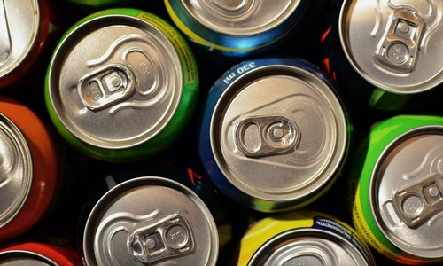
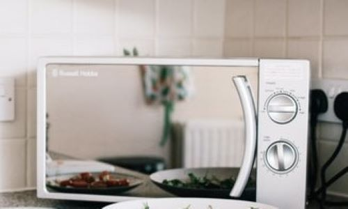
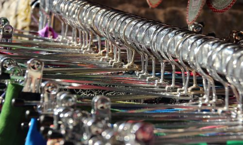

1. Forgot your speaker or just looking for a cheap alternative? Toilet roll is your answer! Cut a slit lengthwise in the middle of an empty paper towel or toilet paper roll large enough for an iPhone to fit into. The result: Sound travels through the roll, amplifying the music, and you have now just made your own kitchen speakers. Don't have an empty roll on hand? No problem! Place your phone or iPod into a plastic quart container, Solo cup, mason jar or small metal bowl. They all work.
1. Forgot your speaker or just looking for a cheap alternative? Toilet roll is your answer! Cut a slit lengthwise in the middle of an empty paper towel or toilet paper roll large enough for an iPhone to fit into. The result: Sound travels through the roll, amplifying the music, and you have now just made your own kitchen speakers. Don't have an empty roll on hand? No problem! Place your phone or iPod into a plastic quart container, Solo cup, mason jar or small metal bowl. They all work.
2. Just bought some drinks from the store and want them cold quick? Try this! If you have a warm or room temperature drink and want to cool it faster, try the paper towel life hack. Wrap the soda or beer in a wet paper towel and put it in the freezer. The paper towel will freeze quickly and the drink will be ice-cold in a matter of minutes.
 3. Got a roommate? Can't use the microwave to heat both your food? Yes you can!. Put your first bowl in the microwave, then put a coffee mug upside down next to it. Next, place your second bowl on top of the coffee mug and voila—a multi-level microwaving system. Now just heat until your heart's content (no more struggling to keep one bowl warm while you wait for the other one to finish).
4. Struggling to fit all your clothes in your wardrobe? There is an easy solution, can tabs is what you need! Instead of buying those multi-hanger type hangers, use the tabs from tab opening cans, such as soda, cat food, ravioli, etc., to hook one or more clothes hangers together to create more room in your closet! Just slip the tab onto the hanger hook and connect the hangers!